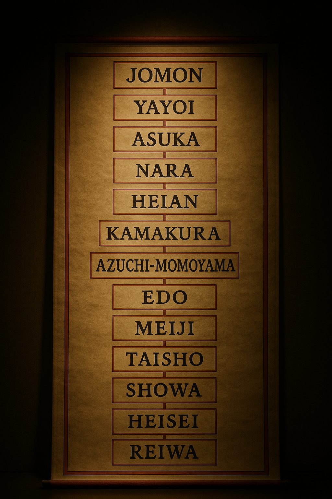

| Era | Approx. years | Key figures & rulers | Significant events/tragedies (keywords) |
|---|---|---|---|
| Jōmon | c. 14,500 BCE – c. 300 BCE | — (prehistoric) | Cord‑marked pottery; hunter‑gatherer society; introduction of rice farming |
| Yayoi | c. 300 BCE – c. 250 CE | Queen Himiko | Wet‑rice agriculture; metal tools; emergence of social classes |
| Kofun | c. 250 – 538 | Yamato chieftains | Giant kofun tombs; rise of imperial line; Shinto rituals |
| Asuka | 538 – 710 | Empress Suiko, Prince Shōtoku, Fujiwara no Kamatari | Introduction of Buddhism; Seventeen‑Article Constitution; Taika Reforms; Jinshin Incident |
| Nara | 710 – 794 | Empress Genmei, Emperor Shōmu | Nara capital; smallpox epidemic (735–737); Tōdai‑ji & Great Buddha; Kojiki and Nihon Shoki |
| Heian | 794 – 1185 | Fujiwara regents, Saichō, Kūkai, Murasaki Shikibu | Move to Kyoto; golden court culture; kana writing; rise of warriors; Genpei War |
| Kamakura | 1185 – 1333 | Minamoto no Yoritomo, Hōjō regents | First shogunate; Jōei Shikimoku; Zen & Nichiren Buddhism; Mongol invasions |
| Muromachi / Sengoku | 1336 – 1573 (Sengoku c. 1467–1568) | Ashikaga shoguns; warlords (Hosokawa, Yamana) | Onin War; Warring States conflicts; cultural innovations (tea ceremony, Noh theatre); construction of Kinkaku‑ji & Ginkaku‑ji |
| Azuchi–Momoyama | 1568/73 – 1600 | Oda Nobunaga, Toyotomi Hideyoshi, Tokugawa Ieyasu | Unification campaigns; sword hunt; invasions of Korea; persecution of Christians |
| Edo (Tokugawa) | 1600 – 1867 | Tokugawa Ieyasu, successive shoguns | Battle of Sekigahara; isolation (sakoku); Genroku culture; famines; arrival of Commodore Perry |
| Meiji | 1868 – 1912 | Emperor Meiji, reformers | Meiji Restoration; modernization & constitution; wars with China and Russia; annexation of Korea |
| Taishō | 1912 – 1926 | Emperor Taishō | Taishō Democracy; World War I; Great Kantō Earthquake (1923) killing ~140k |
| Early Shōwa | 1926 – 1945 | Emperor Hirohito | Militarism; invasion of Manchuria & China; Pacific War; atomic bombings of Hiroshima & Nagasaki |
| Post‑war Shōwa | 1945 – 1989 | Emperor Hirohito, postwar prime ministers | Allied occupation; 1947 constitution; economic miracle; normalization with USSR & China |
| Heisei | 1989 – 2019 | Emperor Akihito | Economic stagnation; Kobe earthquake; Tokyo subway sarin attack; 2011 earthquake & tsunami causing ~18,500 deaths |
| Reiwa | 2019 – present | Emperor Naruhito, Prime Ministers Suga, Kishida | COVID‑19 pandemic; assassination of Shinzō Abe; Noto Peninsula earthquake; Tokyo Olympics |